features.9 unit 34: chequered (texture, 0.168543); bookstore-s (scene, 0.026672); book (object, 0.026275); pane (part, 0.008025); white-c (color, 0.006099); tile (material, 0.004329)
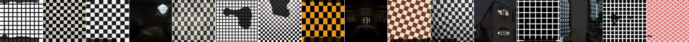
features.9 unit 205: perforated (texture, 0.140258); ball_pit-s (scene, 0.017979); ball (object, 0.014375); muzzle (part, 0.012935); red-c (color, 0.006262); food (material, 0.003947)
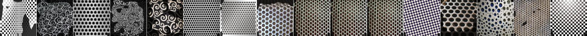
features.9 unit 186: wheel (part, 0.137191); car (object, 0.051497); swirly (texture, 0.018362); food (material, 0.009788); auto_showroom-s (scene, 0.009546); black-c (color, 0.005353)
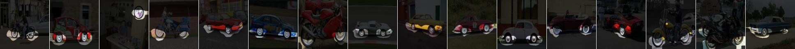
features.9 unit 53: grid (texture, 0.136956); archive-s (scene, 0.017043); pane (part, 0.009245); windowpane (object, 0.008992); white-c (color, 0.005565); wood (material, 0.004903)
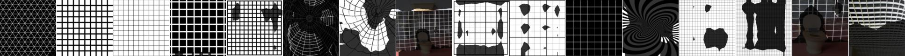
features.9 unit 54: dotted (texture, 0.127839); head (part, 0.036586); person (object, 0.020411); ball_pit-s (scene, 0.016957); food (material, 0.015006); pink-c (color, 0.012553)
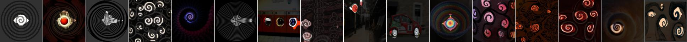
features.9 unit 80: polka-dotted (texture, 0.124941); sky (object, 0.013698); ball_pit-s (scene, 0.009991); white-c (color, 0.007477); food (material, 0.006214); wing (part, 0.006157)
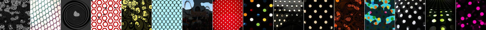
features.9 unit 242: dotted (texture, 0.122836); ball_pit-s (scene, 0.023646); ball (object, 0.014302); pink-c (color, 0.009118); wallpaper (material, 0.003475); muzzle (part, 0.003418)

features.9 unit 164: perforated (texture, 0.117281); signboard (object, 0.015570); shopfront-s (scene, 0.014978); body (part, 0.010500); white-c (color, 0.008964); plastic-opaque (material, 0.002276)
features.9 unit 210: head (part, 0.112485); cat (object, 0.106419); studded (texture, 0.032133); fur (material, 0.006039); brown-c (color, 0.005347); cavern-indoor-s (scene, 0.004920)
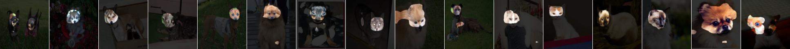
features.9 unit 154: chequered (texture, 0.112211); ball_pit-s (scene, 0.030330); ball (object, 0.016863); red-c (color, 0.009571); hair (part, 0.007690); food (material, 0.006877)
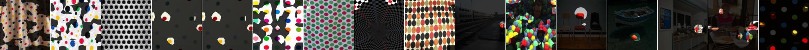
features.9 unit 132: chequered (texture, 0.109960); skyscraper (object, 0.016855); skyscraper-s (scene, 0.008771); white-c (color, 0.007907); pane (part, 0.006034); tile (material, 0.004992)
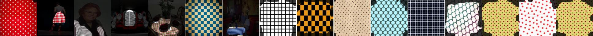
features.9 unit 136: dotted (texture, 0.108447); ball_pit-s (scene, 0.028127); ball (object, 0.016927); food (material, 0.013082); wheel (part, 0.010604); pink-c (color, 0.006217)
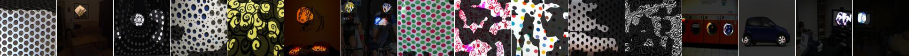
features.9 unit 141: wheel (part, 0.104811); bicycle (object, 0.075672); swirly (texture, 0.057865); labyrinth-indoor-s (scene, 0.006662); ceramic (material, 0.006284); pink-c (color, 0.004622)
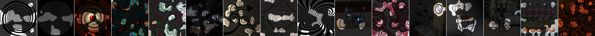
features.9 unit 237: chequered (texture, 0.102607); painting (object, 0.019979); building_facade-s (scene, 0.009449); red-c (color, 0.006563); glass (material, 0.006511); frame (part, 0.005482)
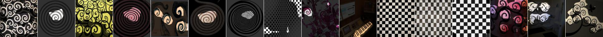
features.9 unit 63: dog (object, 0.098320); head (part, 0.095366); freckled (texture, 0.022367); pink-c (color, 0.008431); ball_pit-s (scene, 0.008263); fur (material, 0.004850)
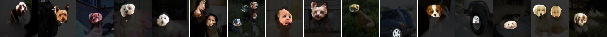
features.9 unit 117: zigzagged (texture, 0.098123); labyrinth (object, 0.036241); labyrinth-indoor-s (scene, 0.022051); pink-c (color, 0.007799); crosswalk (part, 0.007712); carpet (material, 0.001879)
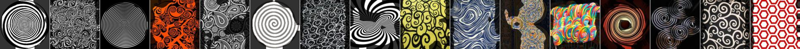
features.9 unit 247: perforated (texture, 0.098114); food (material, 0.008953); person (object, 0.008427); wheel (part, 0.007219); shoe_shop-s (scene, 0.006117); red-c (color, 0.005264)
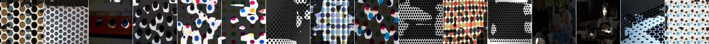
features.9 unit 129: swirly (texture, 0.097267); wheel (part, 0.037511); person (object, 0.020902); labyrinth-indoor-s (scene, 0.011285); ceramic (material, 0.010632); red-c (color, 0.007527)
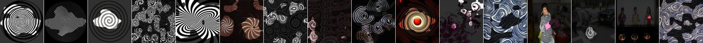
features.9 unit 190: striped (texture, 0.095868); wheel (part, 0.008888); fence-s (scene, 0.008710); track (object, 0.008553); red-c (color, 0.006960); ceramic (material, 0.005396)
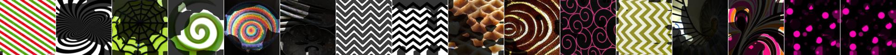
features.9 unit 223: perforated (texture, 0.090932); skyscraper (object, 0.014107); crosswalk (part, 0.012879); balcony-interior-s (scene, 0.010919); white-c (color, 0.007344); plastic-opaque (material, 0.003031)
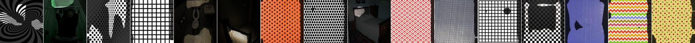
features.9 unit 28: zigzagged (texture, 0.090301); body (part, 0.017989); bus (object, 0.015903); white-c (color, 0.009562); kindergarden_classroom-s (scene, 0.008067); paper (material, 0.007582)
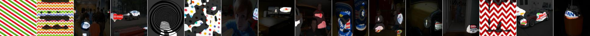
features.9 unit 113: hair (part, 0.089733); person (object, 0.062847); freckled (texture, 0.053646); pink-c (color, 0.023885); skin (material, 0.012453); auto_mechanics-indoor-s (scene, 0.011441)
features.9 unit 150: chequered (texture, 0.088197); leg (part, 0.011595); person (object, 0.007465); cockpit-s (scene, 0.005528); orange-c (color, 0.004476); skin (material, 0.002943)
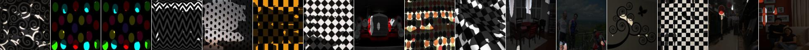
features.9 unit 18: spiralled (texture, 0.086444); head (part, 0.047856); dog (object, 0.039120); food (material, 0.029266); labyrinth-outdoor-s (scene, 0.012198); pink-c (color, 0.007966)
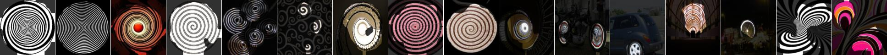
features.9 unit 112: dog (object, 0.085881); head (part, 0.079051); freckled (texture, 0.024767); food (material, 0.010122); orange-c (color, 0.005908); hat_shop-s (scene, 0.004787)
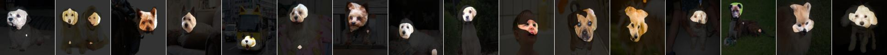
features.9 unit 170: dotted (texture, 0.085604); arcades (part, 0.016259); ball_pit-s (scene, 0.010847); ball (object, 0.008116); food (material, 0.005819); red-c (color, 0.005542)
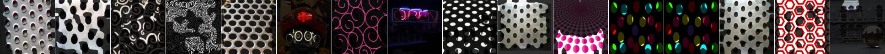
features.9 unit 95: meshed (texture, 0.085373); ball_pit-s (scene, 0.017871); sky (object, 0.011542); blue-c (color, 0.011057); wheel (part, 0.004650); fabric (material, 0.003320)
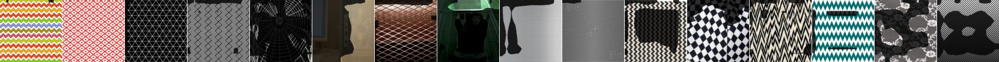
features.9 unit 72: chequered (texture, 0.083450); grass (object, 0.010501); white-c (color, 0.006017); field-cultivated-s (scene, 0.005951); painted (material, 0.003343); screen (part, 0.002480)
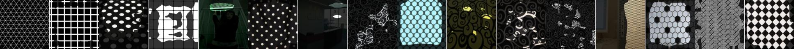
features.9 unit 133: fibrous (texture, 0.083404); tree (object, 0.041107); forest-broadleaf-s (scene, 0.026154); green-c (color, 0.014977); foliage (material, 0.002585); pot (part, 0.001742)
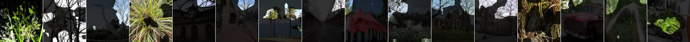
features.9 unit 128: ear (part, 0.083167); cat (object, 0.026760); dotted (texture, 0.014926); pink-c (color, 0.004908); food (material, 0.004751); cockpit-s (scene, 0.004462)

features.9 unit 240: polka-dotted (texture, 0.081629); dog (object, 0.024945); ball_pit-s (scene, 0.023114); head (part, 0.021147); purple-c (color, 0.005281); food (material, 0.004629)
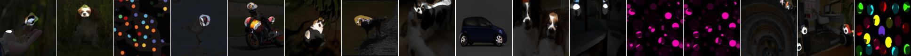
features.9 unit 193: head (part, 0.081215); person (object, 0.051051); freckled (texture, 0.018064); pink-c (color, 0.016987); ball_pit-s (scene, 0.008299); skin (material, 0.005836)
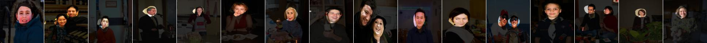
features.9 unit 188: meshed (texture, 0.080138); white-c (color, 0.007611); bird cage (object, 0.007306); pane (part, 0.007034); bow_window-outdoor-s (scene, 0.006876); glass (material, 0.003472)
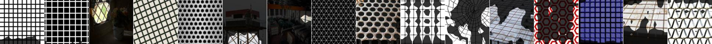
features.9 unit 23: hair (part, 0.079218); person (object, 0.038168); freckled (texture, 0.025326); skin (material, 0.014258); pink-c (color, 0.013990); ball_pit-s (scene, 0.008922)
features.9 unit 151: head (part, 0.078214); person (object, 0.054161); banded (texture, 0.020146); pink-c (color, 0.017907); skin (material, 0.008689); ball_pit-s (scene, 0.008112)
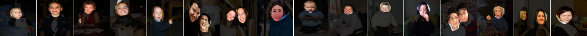
features.9 unit 241: perforated (texture, 0.078129); food (material, 0.012069); bird (object, 0.010570); torso (part, 0.006934); bakery-shop-s (scene, 0.006387); orange-c (color, 0.005446)
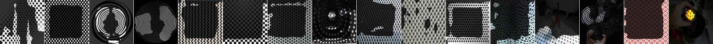
features.9 unit 116: zigzagged (texture, 0.078069); bow_window-outdoor-s (scene, 0.013354); car (object, 0.012489); muzzle (part, 0.012354); white-c (color, 0.007155); glass (material, 0.003881)
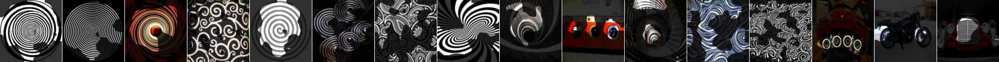
features.9 unit 202: tree (object, 0.075730); park-s (scene, 0.026465); green-c (color, 0.014387); (texture, 0.005988); foliage (material, 0.002498); cloud (part, 0.001528)
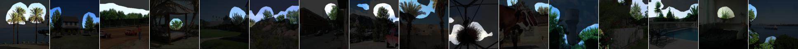
features.9 unit 120: perforated (texture, 0.073593); ground (object, 0.017847); carpet (material, 0.010966); field-cultivated-s (scene, 0.007204); body (part, 0.006954); white-c (color, 0.005170)
features.9 unit 82: grid (texture, 0.072203); skyscraper (object, 0.024554); skyscraper-s (scene, 0.013292); red-c (color, 0.009419); brick (material, 0.004157); roof (part, 0.002615)
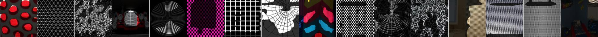
features.9 unit 183: car (object, 0.071085); swirly (texture, 0.012773); street-s (scene, 0.011877); wheel (part, 0.010773); blue-c (color, 0.007022); plastic-opaque (material, 0.004347)
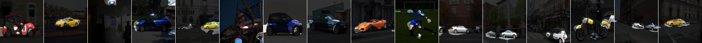
features.9 unit 58: dotted (texture, 0.071024); ball_pit-s (scene, 0.029936); ball (object, 0.016430); glass (material, 0.008948); screen (part, 0.006717); green-c (color, 0.004639)
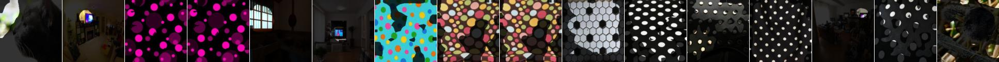
features.9 unit 25: honeycombed (texture, 0.069102); wheel (part, 0.026054); bicycle (object, 0.021462); ball_pit-s (scene, 0.016687); food (material, 0.013078); red-c (color, 0.005748)
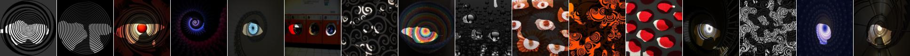
features.9 unit 123: polka-dotted (texture, 0.066390); car (object, 0.011356); body (part, 0.007831); poolroom-establishment-s (scene, 0.007302); red-c (color, 0.003528); paper (material, 0.001593)
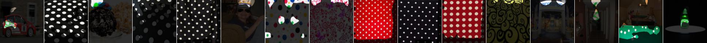
features.9 unit 254: lined (texture, 0.063433); water (object, 0.022155); screen (part, 0.010324); skyscraper-s (scene, 0.007997); plastic-opaque (material, 0.006382); red-c (color, 0.006290)
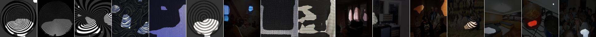
features.9 unit 68: striped (texture, 0.063371); leg (part, 0.012855); curtain (object, 0.012501); closet-s (scene, 0.007818); fabric (material, 0.005624); red-c (color, 0.004293)
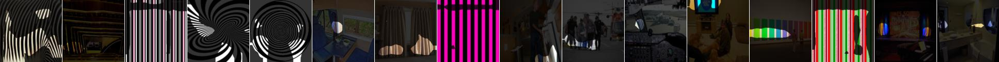
features.9 unit 27: dog (object, 0.062440); head (part, 0.050505); spiralled (texture, 0.011612); mountain_snowy-s (scene, 0.007093); food (material, 0.006534); orange-c (color, 0.004690)
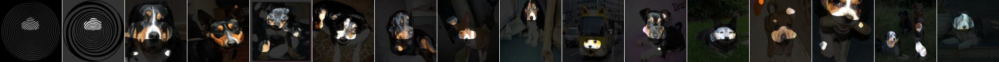
features.9 unit 107: chequered (texture, 0.061495); ball_pit-s (scene, 0.022926); ball (object, 0.012333); paw (part, 0.009846); white-c (color, 0.006138); food (material, 0.004695)
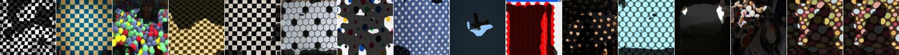
features.9 unit 24: muzzle (part, 0.060548); dog (object, 0.047504); perforated (texture, 0.027015); waterfall-fan-s (scene, 0.004711); white-c (color, 0.004427); fabric (material, 0.003027)
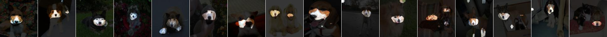
features.9 unit 76: fibrous (texture, 0.060285); grass (object, 0.031741); carpet (material, 0.015361); torso (part, 0.010083); forest-broadleaf-s (scene, 0.009411); green-c (color, 0.007881)
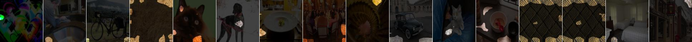
features.9 unit 163: polka-dotted (texture, 0.057803); hair (part, 0.021505); sheep (object, 0.013357); food (material, 0.009369); planetarium-outdoor-s (scene, 0.006644); red-c (color, 0.006222)
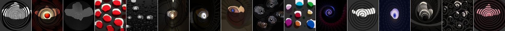
features.9 unit 36: zigzagged (texture, 0.057346); car (object, 0.010101); wheel (part, 0.009575); pink-c (color, 0.007215); building_facade-s (scene, 0.006112); food (material, 0.004325)
features.9 unit 90: studded (texture, 0.056990); tree (object, 0.023475); forest-needleleaf-s (scene, 0.007940); black-c (color, 0.006376); wheel (part, 0.004232); glass (material, 0.001610)
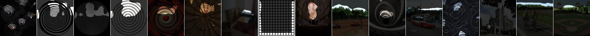
features.9 unit 21: polka-dotted (texture, 0.055998); muzzle (part, 0.015595); dog (object, 0.011346); utility_room-s (scene, 0.007257); orange-c (color, 0.005313); glass (material, 0.003169)
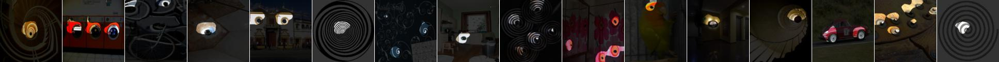
features.9 unit 104: dotted (texture, 0.055760); blue-c (color, 0.007031); curtain (object, 0.006143); screen (part, 0.004747); home_theater-s (scene, 0.004720); painted (material, 0.004185)
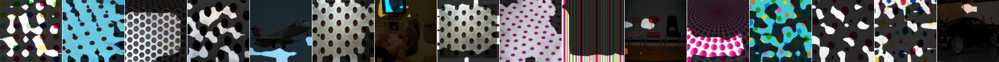
features.9 unit 185: lined (texture, 0.054023); stairway (object, 0.017819); staircase-s (scene, 0.010499); crosswalk (part, 0.010293); orange-c (color, 0.007352); food (material, 0.006406)
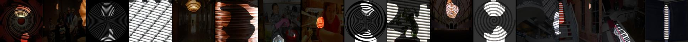
features.9 unit 86: striped (texture, 0.053899); skyscraper (object, 0.026410); skyscraper-s (scene, 0.020294); brick (material, 0.006230); purple-c (color, 0.005759); wheel (part, 0.004972)
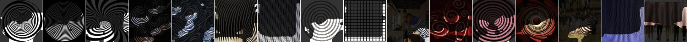
features.9 unit 71: cat (object, 0.053573); freckled (texture, 0.049035); head (part, 0.037247); carpet (material, 0.008325); brown-c (color, 0.005938); alley-s (scene, 0.003917)
features.9 unit 212: spiralled (texture, 0.052794); wheel (part, 0.027123); ceramic (material, 0.020015); bicycle (object, 0.016231); baggage_claim-s (scene, 0.011398); yellow-c (color, 0.004239)
features.9 unit 20: spiralled (texture, 0.052334); wheel (part, 0.016056); bicycle (object, 0.010943); apse-indoor-s (scene, 0.009706); metal (material, 0.008552); white-c (color, 0.004504)
features.9 unit 175: wheel (part, 0.050996); swirly (texture, 0.046027); motorbike (object, 0.027831); pink-c (color, 0.007340); food (material, 0.007126); florist_shop-indoor-s (scene, 0.005244)
features.9 unit 198: spiralled (texture, 0.050983); wheel (part, 0.031216); food (material, 0.027710); bicycle (object, 0.019726); labyrinth-indoor-s (scene, 0.010460); orange-c (color, 0.005584)
features.9 unit 208: spiralled (texture, 0.050716); wheel (part, 0.019908); skyscraper (object, 0.015576); bow_window-outdoor-s (scene, 0.014501); ceramic (material, 0.013695); white-c (color, 0.004489)
features.9 unit 245: studded (texture, 0.049960); ceiling (object, 0.011639); wheel (part, 0.009595); auditorium-s (scene, 0.007963); metal (material, 0.006444); black-c (color, 0.005135)
features.9 unit 172: grid (texture, 0.048962); signboard (object, 0.015802); building_facade-s (scene, 0.014110); body (part, 0.011203); white-c (color, 0.005558); glass (material, 0.003505)
features.9 unit 69: polka-dotted (texture, 0.046888); wheel (part, 0.027995); flower (object, 0.016230); food (material, 0.015770); red-c (color, 0.009996); ball_pit-s (scene, 0.006933)
features.9 unit 6: perforated (texture, 0.046439); car (object, 0.013489); laundromat-s (scene, 0.012544); muzzle (part, 0.005789); grey-c (color, 0.004706); metal (material, 0.003769)
features.9 unit 233: grass (object, 0.046080); green-c (color, 0.014900); carpet (material, 0.014172); park-s (scene, 0.010869); polka-dotted (texture, 0.009114); crosswalk (part, 0.002293)
features.9 unit 66: tree (object, 0.045631); veined (texture, 0.025016); green-c (color, 0.023094); park-s (scene, 0.020776); food (material, 0.006141); torso (part, 0.001493)
features.9 unit 213: horse (object, 0.045282); leg (part, 0.034580); studded (texture, 0.005810); black-c (color, 0.004810); bar-s (scene, 0.004781); wood (material, 0.002540)
features.9 unit 96: dog (object, 0.044985); head (part, 0.043050); dotted (texture, 0.022404); laundromat-s (scene, 0.007764); red-c (color, 0.007274); food (material, 0.004505)
features.9 unit 57: knitted (texture, 0.044964); cat (object, 0.032799); head (part, 0.027569); food (material, 0.008839); japanese_garden-s (scene, 0.007746); purple-c (color, 0.006846)
features.9 unit 52: head (part, 0.044254); dog (object, 0.035828); pink-c (color, 0.015000); freckled (texture, 0.014208); ball_pit-s (scene, 0.005875); skin (material, 0.005590)
features.9 unit 209: food (material, 0.044106); waffled (texture, 0.041319); head (part, 0.029069); dog (object, 0.023226); bakery-shop-s (scene, 0.018581); orange-c (color, 0.017826)
features.9 unit 75: dotted (texture, 0.043763); flower (object, 0.041243); florist_shop-indoor-s (scene, 0.020006); food (material, 0.014339); yellow-c (color, 0.007210); head (part, 0.003929)
features.9 unit 127: dog (object, 0.043456); head (part, 0.034636); striped (texture, 0.031760); mountain_snowy-s (scene, 0.007611); fur (material, 0.006085); brown-c (color, 0.006038)
features.9 unit 211: swirly (texture, 0.043405); eye (part, 0.028599); motorbike (object, 0.013446); food (material, 0.008440); laundromat-s (scene, 0.006841); yellow-c (color, 0.005755)
features.9 unit 59: perforated (texture, 0.042255); sheep (object, 0.020538); torso (part, 0.018781); carpet (material, 0.013291); mountain_snowy-s (scene, 0.006659); purple-c (color, 0.006053)
features.9 unit 135: dog (object, 0.041570); head (part, 0.032750); white-c (color, 0.009566); mountain_snowy-s (scene, 0.009322); striped (texture, 0.008770); fabric (material, 0.006314)
features.9 unit 197: cracked (texture, 0.041053); mountain (object, 0.032561); mountain-s (scene, 0.022141); food (material, 0.017584); green-c (color, 0.006071); roof (part, 0.004034)
features.9 unit 19: dotted (texture, 0.040776); head (part, 0.015851); dog (object, 0.009220); pink-c (color, 0.007849); carpet (material, 0.005119); childs_room-s (scene, 0.004248)
features.9 unit 171: grid (texture, 0.040368); cat (object, 0.012566); office_building-s (scene, 0.011403); head (part, 0.010956); white-c (color, 0.008489); tile (material, 0.003733)
features.9 unit 97: spiralled (texture, 0.039764); wheel (part, 0.011819); skyscraper (object, 0.010493); skyscraper-s (scene, 0.007097); yellow-c (color, 0.004999); metal (material, 0.004216)
features.9 unit 16: head (part, 0.039414); dog (object, 0.019358); swirly (texture, 0.008066); pink-c (color, 0.005762); catwalk-s (scene, 0.003945); food (material, 0.002592)
features.9 unit 155: cat (object, 0.039271); head (part, 0.031082); braided (texture, 0.012773); carpet (material, 0.005847); black-c (color, 0.005809); living_room-s (scene, 0.004283)
features.9 unit 94: dog (object, 0.039005); head (part, 0.038764); polka-dotted (texture, 0.021907); food (material, 0.005661); pink-c (color, 0.004676); ball_pit-s (scene, 0.004565)
features.9 unit 178: wheel (part, 0.038582); spiralled (texture, 0.032564); motorbike (object, 0.021153); ceramic (material, 0.014528); auto_showroom-s (scene, 0.006656); black-c (color, 0.005144)
features.9 unit 45: bus (object, 0.038275); screen (part, 0.027538); glass (material, 0.024643); bow_window-outdoor-s (scene, 0.013931); black-c (color, 0.004920); grid (texture, 0.003946)
features.9 unit 29: zigzagged (texture, 0.038029); torso (part, 0.008502); person (object, 0.006584); fabric (material, 0.006169); subway_station-corridor-s (scene, 0.005554); white-c (color, 0.004434)
features.9 unit 222: swirly (texture, 0.037928); wheel (part, 0.029590); signboard (object, 0.021625); red-c (color, 0.007788); shopfront-s (scene, 0.007587); glass (material, 0.007187)
features.9 unit 114: striped (texture, 0.037884); wheel (part, 0.016065); cat (object, 0.016050); fabric (material, 0.009402); ball_pit-s (scene, 0.007465); pink-c (color, 0.006156)
features.9 unit 220: blue-c (color, 0.037258); sea (object, 0.026264); bubbly (texture, 0.025109); mountain_snowy-s (scene, 0.022180); wheel (part, 0.006460); plastic-opaque (material, 0.006006)
features.9 unit 2: zigzagged (texture, 0.036505); windowpane (object, 0.011830); pane (part, 0.011102); balcony-interior-s (scene, 0.008474); glass (material, 0.007373); white-c (color, 0.005361)
features.9 unit 49: grid (texture, 0.036379); building_facade-s (scene, 0.010625); windowpane (object, 0.008749); black-c (color, 0.005912); glass (material, 0.005291); pane (part, 0.004493)
features.9 unit 87: red-c (color, 0.036003); dotted (texture, 0.033351); person (object, 0.015513); head (part, 0.012588); fabric (material, 0.007869); florist_shop-indoor-s (scene, 0.007680)
features.9 unit 246: striped (texture, 0.035578); closet-s (scene, 0.010437); curtain (object, 0.009841); column (part, 0.005901); orange-c (color, 0.004191); fabric (material, 0.003256)
features.9 unit 244: cobwebbed (texture, 0.035372); wheel (part, 0.020404); bicycle (object, 0.016322); skyscraper-s (scene, 0.005633); orange-c (color, 0.005203); wood (material, 0.004433)
features.9 unit 251: grass (object, 0.035226); green-c (color, 0.014606); mountain-s (scene, 0.011526); (texture, 0.008407); cloud (part, 0.004488); foliage (material, 0.002217)
features.9 unit 110: head (part, 0.035217); person (object, 0.026463); pink-c (color, 0.025143); swirly (texture, 0.024438); skin (material, 0.009021); labyrinth-indoor-s (scene, 0.007561)
features.9 unit 248: swirly (texture, 0.034858); motorbike (object, 0.027283); wheel (part, 0.023875); food (material, 0.012524); orange-c (color, 0.007120); amusement_park-s (scene, 0.006165)
features.9 unit 78: food (material, 0.034575); bumpy (texture, 0.027935); ball_pit-s (scene, 0.019432); red-c (color, 0.014891); plant (object, 0.013477); pot (part, 0.006766)
features.9 unit 152: polka-dotted (texture, 0.034509); wheel (part, 0.016118); food (material, 0.010680); motorbike (object, 0.009853); toyshop-s (scene, 0.005244); red-c (color, 0.005072)

features.9 unit 229: striped (texture, 0.034397); floor (object, 0.012879); black-c (color, 0.009739); skyscraper-s (scene, 0.009666); carpet (material, 0.008374); wheel (part, 0.005903)
features.9 unit 79: wheel (part, 0.034001); dog (object, 0.025361); swirly (texture, 0.022812); black-c (color, 0.007294); cockpit-s (scene, 0.005870); food (material, 0.004495)
features.9 unit 32: person (object, 0.033826); hair (part, 0.031344); ball_pit-s (scene, 0.021095); dotted (texture, 0.013638); pink-c (color, 0.007553); food (material, 0.006078)
features.9 unit 173: meshed (texture, 0.033786); bicycle (object, 0.008218); windmill-s (scene, 0.007187); white-c (color, 0.006019); wheel (part, 0.005090); tile (material, 0.003026)
features.9 unit 145: grass (object, 0.033352); green-c (color, 0.018342); cobwebbed (texture, 0.012340); metal (material, 0.006500); building_facade-s (scene, 0.006449); torso (part, 0.002683)
features.9 unit 196: zigzagged (texture, 0.032864); wheel (part, 0.018148); building_facade-s (scene, 0.012970); painting (object, 0.012092); red-c (color, 0.004979); glass (material, 0.004898)
features.9 unit 214: chequered (texture, 0.032834); grass (object, 0.022696); screen (part, 0.011969); poolroom-home-s (scene, 0.010933); green-c (color, 0.010316); carpet (material, 0.003643)
features.9 unit 221: red-c (color, 0.032761); polka-dotted (texture, 0.022870); bus (object, 0.011095); food (material, 0.008591); bar-s (scene, 0.008194); pot (part, 0.005664)
features.9 unit 35: grass (object, 0.032345); veined (texture, 0.027778); yellow-c (color, 0.027495); field-cultivated-s (scene, 0.017960); food (material, 0.012703); wheel (part, 0.010983)
features.9 unit 121: zigzagged (texture, 0.032308); red-c (color, 0.020640); horse (object, 0.013367); food (material, 0.013365); ear (part, 0.012822); dining_room-s (scene, 0.005150)
features.9 unit 256: arm (part, 0.032180); horse (object, 0.024168); ball_pit-s (scene, 0.016384); skin (material, 0.013342); pink-c (color, 0.011705); polka-dotted (texture, 0.008857)
features.9 unit 93: studded (texture, 0.031968); yellow-c (color, 0.013556); flower (object, 0.011188); food (material, 0.010927); casino-indoor-s (scene, 0.008345); shade (part, 0.005036)
features.9 unit 207: head (part, 0.031942); person (object, 0.024150); food (material, 0.016343); freckled (texture, 0.012916); red-c (color, 0.011577); ball_pit-s (scene, 0.007823)
features.9 unit 108: bird (object, 0.031862); torso (part, 0.013166); food (material, 0.006305); spiralled (texture, 0.005356); orange-c (color, 0.004127); conference_room-s (scene, 0.003659)
features.9 unit 56: striped (texture, 0.031725); wheel (part, 0.013850); motorbike (object, 0.010172); food (material, 0.006777); labyrinth-indoor-s (scene, 0.003948); red-c (color, 0.003734)
features.9 unit 226: grid (texture, 0.031153); bus (object, 0.016363); coach (part, 0.008809); archive-s (scene, 0.005610); red-c (color, 0.005578); glass (material, 0.003685)

features.9 unit 230: screen (part, 0.031133); tvmonitor (object, 0.020935); casino-indoor-s (scene, 0.018054); glass (material, 0.014654); dotted (texture, 0.012973); blue-c (color, 0.007219)
features.9 unit 177: cat (object, 0.031107); head (part, 0.022364); waffled (texture, 0.018162); ball_pit-s (scene, 0.008727); orange-c (color, 0.005387); wood (material, 0.004664)

features.9 unit 215: plant (object, 0.031048); green-c (color, 0.023274); frilly (texture, 0.013911); gazebo-exterior-s (scene, 0.009282); food (material, 0.006820); body (part, 0.003330)
features.9 unit 238: zigzagged (texture, 0.031038); book (object, 0.023502); building_facade-s (scene, 0.012683); glass (material, 0.007036); orange-c (color, 0.005425); coach (part, 0.005378)
features.9 unit 31: house (object, 0.030897); roof (part, 0.016797); house-s (scene, 0.014941); banded (texture, 0.009080); pink-c (color, 0.003890); wood (material, 0.002435)
features.9 unit 33: wheel (part, 0.030695); swirly (texture, 0.027794); bicycle (object, 0.018636); metal (material, 0.009428); bakery-shop-s (scene, 0.006974); purple-c (color, 0.003804)

features.9 unit 100: head (part, 0.030441); person (object, 0.021333); dotted (texture, 0.012230); pink-c (color, 0.006695); cockpit-s (scene, 0.005425); metal (material, 0.005098)
features.9 unit 124: swirly (texture, 0.029971); orange-c (color, 0.008873); person (object, 0.008079); head (part, 0.007149); carpet (material, 0.006104); airport_terminal-s (scene, 0.005526)
features.9 unit 51: arm (part, 0.029898); person (object, 0.023222); pink-c (color, 0.015266); skin (material, 0.014666); freckled (texture, 0.010644); ball_pit-s (scene, 0.005326)

features.9 unit 122: dog (object, 0.029800); head (part, 0.023486); frilly (texture, 0.013141); pink-c (color, 0.007838); food (material, 0.004433); butchers_shop-s (scene, 0.004418)
features.9 unit 143: studded (texture, 0.029761); motorbike (object, 0.013355); wheel (part, 0.011136); cockpit-s (scene, 0.006122); black-c (color, 0.004069); metal (material, 0.002137)
features.9 unit 200: head (part, 0.029572); dog (object, 0.023493); freckled (texture, 0.015194); food (material, 0.010973); mountain-s (scene, 0.007533); yellow-c (color, 0.004341)
features.9 unit 109: grid (texture, 0.029392); windowpane (object, 0.020575); pane (part, 0.012584); airport_terminal-s (scene, 0.011541); white-c (color, 0.008971); glass (material, 0.008751)
features.9 unit 218: banded (texture, 0.029363); orange-c (color, 0.017044); ball_pit-s (scene, 0.009258); wood (material, 0.008832); book (object, 0.008149); body (part, 0.003047)
features.9 unit 182: grid (texture, 0.029029); hair (part, 0.020879); motorbike (object, 0.008615); black-c (color, 0.006744); building_facade-s (scene, 0.004498); metal (material, 0.002004)
features.9 unit 203: perforated (texture, 0.029002); ball_pit-s (scene, 0.015918); bus (object, 0.012417); food (material, 0.011857); wheel (part, 0.010171); red-c (color, 0.005745)
features.9 unit 65: grid (texture, 0.028866); glass (material, 0.019807); pane (part, 0.019766); windowpane (object, 0.018458); archive-s (scene, 0.013068); white-c (color, 0.008508)
features.9 unit 105: cracked (texture, 0.028865); car (object, 0.011060); greenhouse-indoor-s (scene, 0.006498); wheel (part, 0.006081); white-c (color, 0.005252); tile (material, 0.002673)
features.9 unit 12: swirly (texture, 0.028762); car (object, 0.014257); muzzle (part, 0.010818); black-c (color, 0.010683); cockpit-s (scene, 0.004627); metal (material, 0.004159)
features.9 unit 9: waffled (texture, 0.028679); head (part, 0.012587); person (object, 0.011771); pink-c (color, 0.010050); skin (material, 0.008301); living_room-s (scene, 0.003761)
features.9 unit 130: grass (object, 0.028379); swirly (texture, 0.014017); pasture-s (scene, 0.012421); green-c (color, 0.007797); leg (part, 0.005779); carpet (material, 0.003203)
features.9 unit 17: spiralled (texture, 0.028183); wheel (part, 0.021669); motorbike (object, 0.013158); metal (material, 0.008488); church-indoor-s (scene, 0.005043); red-c (color, 0.004838)
features.9 unit 5: person (object, 0.027890); head (part, 0.024653); pink-c (color, 0.010974); banquet_hall-s (scene, 0.005906); dotted (texture, 0.005800); skin (material, 0.004196)
features.9 unit 187: wheel (part, 0.027692); motorbike (object, 0.019562); swirly (texture, 0.018646); ball_pit-s (scene, 0.014335); blue-c (color, 0.012956); plastic-opaque (material, 0.006313)
features.9 unit 204: nose (part, 0.027321); swirly (texture, 0.025043); food (material, 0.019223); motorbike (object, 0.019114); red-c (color, 0.005842); bakery-shop-s (scene, 0.005727)
features.9 unit 115: mountain_snowy-s (scene, 0.026677); frilly (texture, 0.024852); tree (object, 0.021148); green-c (color, 0.009268); head (part, 0.008788); food (material, 0.005485)
features.9 unit 73: zigzagged (texture, 0.026544); motorbike (object, 0.012809); wheel (part, 0.010102); metal (material, 0.005336); black-c (color, 0.005254); airport_terminal-s (scene, 0.004699)
features.9 unit 99: wheel (part, 0.026498); cracked (texture, 0.015098); motorbike (object, 0.010712); laundromat-s (scene, 0.005971); glass (material, 0.004773); white-c (color, 0.004531)
features.9 unit 174: cracked (texture, 0.026285); head (part, 0.014144); dog (object, 0.012907); food (material, 0.010478); greenhouse-indoor-s (scene, 0.008886); blue-c (color, 0.006518)
features.9 unit 74: paisley (texture, 0.025674); carpet (material, 0.008228); red-c (color, 0.008209); amusement_park-s (scene, 0.008193); table (object, 0.006620); arm (part, 0.003514)
features.9 unit 161: grid (texture, 0.025460); food (material, 0.009177); bed (object, 0.009124); body (part, 0.004901); red-c (color, 0.004894); bow_window-outdoor-s (scene, 0.004253)
features.9 unit 14: dog (object, 0.025440); leg (part, 0.018659); waffled (texture, 0.006594); food (material, 0.005551); bakery-shop-s (scene, 0.004731); brown-c (color, 0.004383)
features.9 unit 46: smeared (texture, 0.024651); dog (object, 0.018279); head (part, 0.015135); purple-c (color, 0.010427); fabric (material, 0.007577); waterfall-block-s (scene, 0.006586)
features.9 unit 195: grid (texture, 0.024312); fence (object, 0.016901); building_facade-s (scene, 0.006729); screen (part, 0.005544); glass (material, 0.004594); green-c (color, 0.004404)
features.9 unit 142: fibrous (texture, 0.024301); building (object, 0.011505); building_facade-s (scene, 0.009510); black-c (color, 0.004879); balcony (part, 0.004567); wood (material, 0.002489)
features.9 unit 40: banded (texture, 0.024276); book (object, 0.008620); ball_pit-s (scene, 0.007193); red-c (color, 0.005945); coach (part, 0.004129); fabric (material, 0.002613)
features.9 unit 137: zigzagged (texture, 0.024223); track (object, 0.012035); supermarket-s (scene, 0.010097); coach (part, 0.005709); white-c (color, 0.004353); granite (material, 0.004046)
features.9 unit 180: chequered (texture, 0.024183); wheel (part, 0.011996); bicycle (object, 0.009046); food (material, 0.007045); mountain_snowy-s (scene, 0.006415); purple-c (color, 0.004887)
features.9 unit 149: wheel (part, 0.023998); striped (texture, 0.022118); dog (object, 0.016399); red-c (color, 0.004838); closet-s (scene, 0.004488); fabric (material, 0.002938)
features.9 unit 83: dotted (texture, 0.023851); bus (object, 0.019753); ball_pit-s (scene, 0.016194); red-c (color, 0.015534); food (material, 0.010894); body (part, 0.010597)
features.9 unit 252: head (part, 0.023619); dog (object, 0.016586); ball_pit-s (scene, 0.006511); dotted (texture, 0.005330); food (material, 0.005027); pink-c (color, 0.005022)
features.9 unit 88: zigzagged (texture, 0.023615); yellow-c (color, 0.022149); food (material, 0.021291); bus (object, 0.010016); body (part, 0.007876); ball_pit-s (scene, 0.007560)
features.9 unit 159: polka-dotted (texture, 0.023603); wheel (part, 0.022329); motorbike (object, 0.013470); black-c (color, 0.006310); food (material, 0.006234); casino-indoor-s (scene, 0.005048)

features.9 unit 176: dog (object, 0.023390); head (part, 0.022552); food (material, 0.021803); freckled (texture, 0.018075); orange-c (color, 0.009699); earth_fissure-s (scene, 0.004417)
features.9 unit 184: wheel (part, 0.023220); sidewalk (object, 0.021581); carpet (material, 0.011228); dining_room-s (scene, 0.009204); grey-c (color, 0.004296); (texture, 0.003525)
features.9 unit 103: polka-dotted (texture, 0.023011); sky (object, 0.016001); blue-c (color, 0.010777); wheel (part, 0.010195); skyscraper-s (scene, 0.010076); ceramic (material, 0.006643)
features.9 unit 106: dog (object, 0.022725); head (part, 0.022247); swirly (texture, 0.012596); bowling_alley-s (scene, 0.006449); red-c (color, 0.005012); food (material, 0.004161)
features.9 unit 62: dotted (texture, 0.022479); hair (part, 0.010596); mountain (object, 0.010338); orange-c (color, 0.008384); hayfield-s (scene, 0.008028); food (material, 0.007136)
features.9 unit 201: head (part, 0.022235); dog (object, 0.020143); spiralled (texture, 0.017872); red-c (color, 0.009779); metal (material, 0.007948); auto_showroom-s (scene, 0.004843)
features.9 unit 206: bus (object, 0.022054); body (part, 0.015688); building_facade-s (scene, 0.006436); red-c (color, 0.004067); wood (material, 0.003336); (texture, 0.002329)
features.9 unit 236: building_facade-s (scene, 0.021758); building (object, 0.020000); coach (part, 0.007147); chequered (texture, 0.006533); red-c (color, 0.005159); glass (material, 0.002397)
features.9 unit 60: wrinkled (texture, 0.021685); torso (part, 0.016656); person (object, 0.013523); fabric (material, 0.011503); red-c (color, 0.007904); gulch-s (scene, 0.006780)
features.9 unit 131: grid (texture, 0.021480); red-c (color, 0.021306); seat (object, 0.011387); theater-indoor_procenium-s (scene, 0.010147); torso (part, 0.007363); fabric (material, 0.006765)
features.9 unit 64: crosshatched (texture, 0.021391); skyscraper (object, 0.015245); skyscraper-s (scene, 0.012664); head (part, 0.010534); carpet (material, 0.008289); green-c (color, 0.005385)
features.9 unit 125: food (material, 0.020993); painting (object, 0.017672); swirly (texture, 0.013598); wheel (part, 0.011251); pantry-s (scene, 0.010252); yellow-c (color, 0.007438)
features.9 unit 11: bus (object, 0.020509); wheel (part, 0.014792); building_facade-s (scene, 0.010770); banded (texture, 0.006443); glass (material, 0.005596); white-c (color, 0.004091)
features.9 unit 234: head (part, 0.020122); person (object, 0.016967); spiralled (texture, 0.007640); pink-c (color, 0.005638); witness_stand-s (scene, 0.004498); wood (material, 0.002668)
features.9 unit 199: bird (object, 0.019991); head (part, 0.017823); ball_pit-s (scene, 0.017080); smeared (texture, 0.014941); orange-c (color, 0.011388); food (material, 0.007710)
features.9 unit 224: head (part, 0.019956); chequered (texture, 0.016048); person (object, 0.009533); building_facade-s (scene, 0.006366); pink-c (color, 0.004377); glass (material, 0.002899)
features.9 unit 166: zigzagged (texture, 0.019722); arm (part, 0.015159); person (object, 0.011834); fabric (material, 0.007985); white-c (color, 0.006496); ball_pit-s (scene, 0.004969)
features.9 unit 8: polka-dotted (texture, 0.019670); bottle (object, 0.011142); body (part, 0.010956); rope_bridge-s (scene, 0.004928); purple-c (color, 0.003945); fabric (material, 0.002357)
features.9 unit 55: zigzagged (texture, 0.019380); wood (material, 0.009251); orange-c (color, 0.008910); track (object, 0.008534); dining_room-s (scene, 0.007221); drawer (part, 0.003349)
features.9 unit 85: polka-dotted (texture, 0.019334); skyscraper (object, 0.006500); skyscraper-s (scene, 0.005899); body (part, 0.005577); carpet (material, 0.005373); red-c (color, 0.005034)
features.9 unit 50: skyscraper (object, 0.019149); head (part, 0.018116); spiralled (texture, 0.014776); skyscraper-s (scene, 0.012961); pink-c (color, 0.004957); food (material, 0.004085)
features.9 unit 228: ground (object, 0.019070); carpet (material, 0.014938); spiralled (texture, 0.010732); auto_showroom-s (scene, 0.006175); black-c (color, 0.003864); torso (part, 0.002415)
features.9 unit 160: screen (part, 0.018859); tvmonitor (object, 0.016369); zigzagged (texture, 0.012349); glass (material, 0.010826); kitchen-s (scene, 0.004529); white-c (color, 0.004189)
features.9 unit 148: swirly (texture, 0.018447); yellow-c (color, 0.010825); wheel (part, 0.009039); bottle (object, 0.006306); casino-indoor-s (scene, 0.005764); food (material, 0.005287)
features.9 unit 126: lined (texture, 0.018205); windowpane (object, 0.011793); living_room-s (scene, 0.010168); pane (part, 0.007393); yellow-c (color, 0.005994); painted (material, 0.005484)
features.9 unit 22: floor (object, 0.018016); carpet (material, 0.014281); orange-c (color, 0.011498); hair (part, 0.010988); chequered (texture, 0.007204); closet-s (scene, 0.005551)
features.9 unit 101: dog (object, 0.017800); zigzagged (texture, 0.016504); ear (part, 0.014353); metal (material, 0.004343); viaduct-s (scene, 0.004219); orange-c (color, 0.004060)
features.9 unit 134: flower (object, 0.017566); sprinkled (texture, 0.012320); pantry-s (scene, 0.010453); shop window (part, 0.009729); green-c (color, 0.004666); glass (material, 0.004184)
features.9 unit 231: skyscraper-s (scene, 0.017275); car (object, 0.014307); dotted (texture, 0.010296); red-c (color, 0.007176); coach (part, 0.005286); wood (material, 0.002423)
features.9 unit 139: airplane (object, 0.017154); body (part, 0.016405); spiralled (texture, 0.009380); red-c (color, 0.007176); metal (material, 0.006293); moon_bounce-s (scene, 0.006138)
features.9 unit 156: dotted (texture, 0.016771); sidewalk (object, 0.016622); white-c (color, 0.010302); street-s (scene, 0.008230); paper (material, 0.003868); crosswalk (part, 0.003583)
features.9 unit 194: motorbike (object, 0.016573); wheel (part, 0.014948); food (material, 0.006839); red-c (color, 0.006398); zigzagged (texture, 0.004835); auto_showroom-s (scene, 0.003828)
features.9 unit 47: hair (part, 0.016489); freckled (texture, 0.011484); person (object, 0.008280); orange-c (color, 0.006997); ball_pit-s (scene, 0.006906); wood (material, 0.004845)
features.9 unit 41: floor (object, 0.016462); waffled (texture, 0.015254); orange-c (color, 0.012787); wood (material, 0.009905); living_room-s (scene, 0.009898); torso (part, 0.004539)
features.9 unit 70: zigzagged (texture, 0.016317); footboard (part, 0.008904); pool table (object, 0.007944); youth_hostel-s (scene, 0.005237); wood (material, 0.004285); white-c (color, 0.004111)
features.9 unit 118: sky (object, 0.016279); street-s (scene, 0.006923); white-c (color, 0.006748); (texture, 0.003037); hair (part, 0.002777); painted (material, 0.001702)
features.9 unit 1: windowpane (object, 0.016261); building_facade-s (scene, 0.011312); pane (part, 0.009609); glass (material, 0.006373); orange-c (color, 0.004900); grid (texture, 0.004482)
features.9 unit 102: car (object, 0.016189); arm (part, 0.010662); pink-c (color, 0.004588); art_studio-s (scene, 0.004391); glass (material, 0.003816); (texture, 0.002263)
features.9 unit 158: honeycombed (texture, 0.016100); orange-c (color, 0.009200); hair (part, 0.007099); dog (object, 0.006794); food (material, 0.006543); bakery-shop-s (scene, 0.004361)
features.9 unit 181: head (part, 0.015799); freckled (texture, 0.014306); dog (object, 0.014077); metal (material, 0.008530); subway_station-corridor-s (scene, 0.007721); orange-c (color, 0.005683)
features.9 unit 39: muzzle (part, 0.015310); dog (object, 0.014513); waffled (texture, 0.012295); white-c (color, 0.005916); food (material, 0.004431); laundromat-s (scene, 0.004395)
features.9 unit 81: bicycle (object, 0.015271); wheel (part, 0.013862); paisley (texture, 0.013244); blue-c (color, 0.010703); mountain_snowy-s (scene, 0.006273); carpet (material, 0.004921)
features.9 unit 146: dotted (texture, 0.014974); dog (object, 0.011919); torso (part, 0.008428); yellow-c (color, 0.008195); fabric (material, 0.007334); living_room-s (scene, 0.006048)
features.9 unit 169: person (object, 0.014814); blue-c (color, 0.014344); torso (part, 0.012725); fabric (material, 0.010259); spiralled (texture, 0.008549); ball_pit-s (scene, 0.004017)
features.9 unit 43: person (object, 0.014735); leg (part, 0.013122); black-c (color, 0.008256); ball_pit-s (scene, 0.007773); bubbly (texture, 0.006224); fabric (material, 0.003524)
features.9 unit 239: head (part, 0.014498); book (object, 0.008408); swirly (texture, 0.008043); bookstore-s (scene, 0.007324); orange-c (color, 0.005266); carpet (material, 0.003602)
features.9 unit 192: banded (texture, 0.014497); white-c (color, 0.004755); dining_room-s (scene, 0.004402); floor (object, 0.004301); leg (part, 0.004109); metal (material, 0.002600)
features.9 unit 10: swirly (texture, 0.014381); road (object, 0.010327); conference_room-s (scene, 0.006334); pink-c (color, 0.005935); carpet (material, 0.005696); screen (part, 0.004070)
features.9 unit 44: chequered (texture, 0.014290); airplane (object, 0.006991); wing (part, 0.005051); office-s (scene, 0.004486); white-c (color, 0.004180); paper (material, 0.002796)
features.9 unit 216: spiralled (texture, 0.013974); food (material, 0.012961); bed (object, 0.007535); torso (part, 0.007473); orange-c (color, 0.004211); subway_station-corridor-s (scene, 0.003877)
features.9 unit 232: screen (part, 0.013972); spiralled (texture, 0.012383); tvmonitor (object, 0.011005); glass (material, 0.007955); pantry-s (scene, 0.005266); orange-c (color, 0.004462)
features.9 unit 191: tree (object, 0.013612); street-s (scene, 0.006936); grid (texture, 0.006603); white-c (color, 0.004581); pane (part, 0.002604); glass (material, 0.002180)
features.9 unit 235: yellow-c (color, 0.013530); bus (object, 0.012869); head (part, 0.007583); food (material, 0.006453); field-cultivated-s (scene, 0.005633); zigzagged (texture, 0.004347)
features.9 unit 7: wheel (part, 0.013347); blue-c (color, 0.009051); motorbike (object, 0.008504); honeycombed (texture, 0.008184); street-s (scene, 0.004515); metal (material, 0.004456)
features.9 unit 168: floor (object, 0.013286); wheel (part, 0.007889); carpet (material, 0.006378); living_room-s (scene, 0.006082); grey-c (color, 0.005259); interlaced (texture, 0.004804)
features.9 unit 249: swirly (texture, 0.013275); body (part, 0.011928); white-c (color, 0.011723); painting (object, 0.009683); glass (material, 0.005299); childs_room-s (scene, 0.005266)
features.9 unit 179: meshed (texture, 0.013246); bicycle (object, 0.012283); wheel (part, 0.011385); red-c (color, 0.007312); amusement_park-s (scene, 0.007210); food (material, 0.005221)
features.9 unit 61: bottle (object, 0.013238); body (part, 0.013177); ceramic (material, 0.009109); water_tower-s (scene, 0.004424); orange-c (color, 0.004219); spiralled (texture, 0.003036)
features.9 unit 144: swirly (texture, 0.013065); wheel (part, 0.010508); signboard (object, 0.008233); dining_room-s (scene, 0.004301); red-c (color, 0.003552); carpet (material, 0.002886)
features.9 unit 157: spiralled (texture, 0.012867); person (object, 0.009015); arm (part, 0.008630); white-c (color, 0.008179); ceramic (material, 0.007978); cockpit-s (scene, 0.003964)
features.9 unit 4: water (object, 0.012509); grid (texture, 0.012130); boathouse-s (scene, 0.007294); tile (material, 0.006682); grey-c (color, 0.004087); coach (part, 0.003228)
features.9 unit 227: screen (part, 0.012436); windowpane (object, 0.009393); blue-c (color, 0.006975); glass (material, 0.006211); building_facade-s (scene, 0.006120); (texture, 0.003143)
features.9 unit 217: chequered (texture, 0.012274); hair (part, 0.008968); sky (object, 0.006703); bus_depot-outdoor-s (scene, 0.006034); white-c (color, 0.004481); painted (material, 0.003301)
features.9 unit 225: banded (texture, 0.012082); torso (part, 0.007840); cabinet (object, 0.007613); closet-s (scene, 0.006643); orange-c (color, 0.006404); wood (material, 0.005345)
features.9 unit 77: orange-c (color, 0.012061); spiralled (texture, 0.009125); dining_room-s (scene, 0.008789); chair (object, 0.008315); wood (material, 0.008203); footboard (part, 0.005409)
features.9 unit 84: person (object, 0.012016); leg (part, 0.009097); chequered (texture, 0.007170); fabric (material, 0.005022); art_studio-s (scene, 0.004169); black-c (color, 0.003844)
features.9 unit 165: painting (object, 0.011775); glass (material, 0.007807); pane (part, 0.007471); building_facade-s (scene, 0.005432); chequered (texture, 0.005239); black-c (color, 0.004267)
features.9 unit 67: sky (object, 0.011746); white-c (color, 0.010286); painted (material, 0.007108); catwalk-s (scene, 0.004817); cracked (texture, 0.004388); hair (part, 0.000809)
features.9 unit 91: pole (object, 0.011732); grid (texture, 0.011558); leg (part, 0.008490); playground-s (scene, 0.004412); black-c (color, 0.002913); glass (material, 0.002196)
features.9 unit 140: perforated (texture, 0.011402); orange-c (color, 0.007460); wall (object, 0.006189); painted (material, 0.005699); living_room-s (scene, 0.005614); torso (part, 0.004543)
features.9 unit 98: mountain_snowy-s (scene, 0.011334); polka-dotted (texture, 0.006461); grass (object, 0.005649); blue-c (color, 0.004097); leather (material, 0.002417); torso (part, 0.001870)
features.9 unit 119: car (object, 0.011307); wheel (part, 0.008209); green-c (color, 0.005693); cockpit-s (scene, 0.005446); studded (texture, 0.005051); metal (material, 0.004087)
features.9 unit 26: building_facade-s (scene, 0.011039); building (object, 0.009354); leg (part, 0.009237); perforated (texture, 0.005916); yellow-c (color, 0.003797); glass (material, 0.002724)
features.9 unit 253: zigzagged (texture, 0.010826); wheel (part, 0.004817); table (object, 0.004463); moon_bounce-s (scene, 0.004210); black-c (color, 0.003394); metal (material, 0.003027)
features.9 unit 92: ceiling (object, 0.010379); yellow-c (color, 0.007857); shade (part, 0.007224); painted (material, 0.006485); hotel_room-s (scene, 0.006212); (texture, 0.001850)
features.9 unit 111: sidewalk (object, 0.010356); closet-s (scene, 0.007494); pink-c (color, 0.006260); fabric (material, 0.005610); swirly (texture, 0.005133); seat cushion (part, 0.002990)
features.9 unit 153: nose (part, 0.010352); food (material, 0.008722); motorbike (object, 0.008061); casino-indoor-s (scene, 0.007150); orange-c (color, 0.006300); bubbly (texture, 0.005878)
features.9 unit 250: book (object, 0.010295); bookstore-s (scene, 0.007712); coach (part, 0.006943); red-c (color, 0.003334); grid (texture, 0.003318); glass (material, 0.002429)
features.9 unit 255: bench (object, 0.010087); church-indoor-s (scene, 0.006275); spiralled (texture, 0.006217); crosswalk (part, 0.004405); black-c (color, 0.003747); wood (material, 0.003242)
features.9 unit 89: bird (object, 0.009765); head (part, 0.008959); spiralled (texture, 0.007917); building_facade-s (scene, 0.006641); carpet (material, 0.004038); grey-c (color, 0.003976)
features.9 unit 167: cabinet (object, 0.009536); drawer (part, 0.009229); kitchen-s (scene, 0.005749); orange-c (color, 0.005149); wood (material, 0.004423); swirly (texture, 0.003107)

features.9 unit 48: cracked (texture, 0.009424); ground (object, 0.009402); carpet (material, 0.006734); black-c (color, 0.005290); conference_room-s (scene, 0.004255); leg (part, 0.003405)
features.9 unit 3: car (object, 0.009242); roof (part, 0.008796); house-s (scene, 0.005727); white-c (color, 0.005305); food (material, 0.003951); (texture, 0.003591)
features.9 unit 162: house (object, 0.009218); roof (part, 0.008536); house-s (scene, 0.006003); painted (material, 0.004714); yellow-c (color, 0.003967); polka-dotted (texture, 0.003920)
features.9 unit 13: perforated (texture, 0.009001); metal (material, 0.006241); screen (part, 0.005990); pantry-s (scene, 0.005688); wall (object, 0.004855); yellow-c (color, 0.004744)
features.9 unit 37: spiralled (texture, 0.008968); hair (part, 0.007289); motorbike (object, 0.005946); water_tower-s (scene, 0.003803); ceramic (material, 0.003742); white-c (color, 0.002701)
features.9 unit 15: sky (object, 0.008929); lighthouse-s (scene, 0.006931); blue-c (color, 0.005953); sprinkled (texture, 0.004756); head (part, 0.003368); painted (material, 0.001846)
features.9 unit 243: bicycle (object, 0.008361); chequered (texture, 0.007949); wheel (part, 0.007644); metal (material, 0.006006); cockpit-s (scene, 0.004394); black-c (color, 0.003173)
features.9 unit 147: spiralled (texture, 0.008185); bed (object, 0.006348); red-c (color, 0.005056); ceramic (material, 0.004727); footboard (part, 0.004463); bedroom-s (scene, 0.004059)
features.9 unit 189: chequered (texture, 0.008181); art_gallery-s (scene, 0.006212); bus (object, 0.005664); painted (material, 0.004672); white-c (color, 0.003875); roof (part, 0.003817)
features.9 unit 38: sky (object, 0.008090); street-s (scene, 0.007169); roof (part, 0.006058); white-c (color, 0.004944); spiralled (texture, 0.003518); fabric (material, 0.001933)
features.9 unit 219: escalator-outdoor-s (scene, 0.007699); grooved (texture, 0.007621); escalator (object, 0.006912); white-c (color, 0.004624); metal (material, 0.004399); wheel (part, 0.004375)
features.9 unit 30: floor (object, 0.007605); carpet (material, 0.006428); kitchen-s (scene, 0.005113); chequered (texture, 0.004784); monitor (part, 0.004777); red-c (color, 0.003675)
features.9 unit 42: ceiling (object, 0.007069); orange-c (color, 0.006614); zigzagged (texture, 0.006563); street-s (scene, 0.004906); wood (material, 0.003577); ear (part, 0.002250)
features.9 unit 138: closet-s (scene, 0.004974); bicycle (object, 0.004304); meshed (texture, 0.004089); white-c (color, 0.004053); stern (part, 0.003726); metal (material, 0.003197)